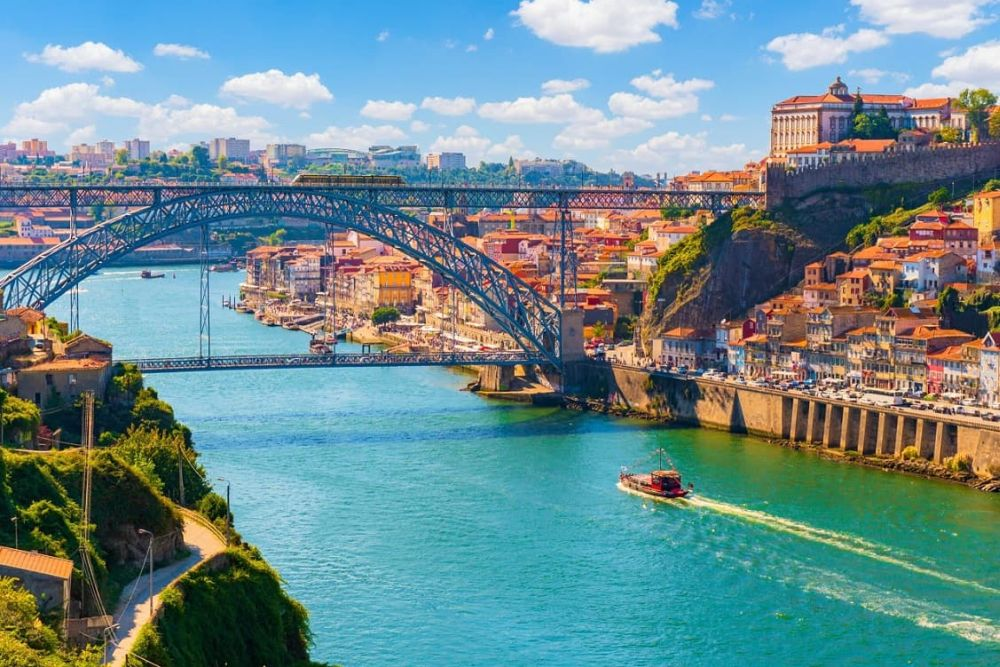

Explorați Porto - O călătorie în orașul râului
Porto este un oraș plin de istorie și autenticitate, oferind o varietate de atracții captivante pentru vizitatori:
-

Cartierul Ribeira - Atmosferă pitorească
Străzile înguste, clădirile colorate și atmosfera vibrantă fac din Ribeira un loc perfect pentru o plimbare relaxantă.
-

Podul Dom Luís I - Simbol arhitectural
Acest pod elegant de oțel oferă vederi panoramice asupra orașului și traversează râul Douro.
-

Cramele de vin de Porto - Tradiție și degustări
Explorați cramele istorice unde se produce vinul de Porto și savurați degustările din acest nectar local.
-

Parcul Serralves - Relaxare în natură
Această oază verde oferă grădini frumoase, artă contemporană și un spațiu liniștit pentru relaxare.
-

Turnul Clerigos - Priveliști panoramice
Oferind o priveliște asupra orașului, acest turn baroc este un simbol arhitectural important în Porto.
Concluzii
Porto încântă vizitatorii cu istoria sa bogată, arhitectura unică și peisajele pitorești.